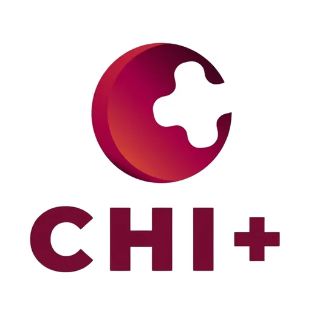

PWC CHI+ Technology Business Incubator
Philippine Women's College of Davao (PWC) · Region XI
Creative Hub for Innovation (ChI+) is the Technology Business Incubator of Philippine Women's College of Davao (PWC) in Davao City. A DOST-supported TBI, CHI+ focuses on technology and social innovation with a particular emphasis on health and women-centered entrepreneurship, reflecting PWC's historical mission as a leading women's educational institution in Southern Mindanao.
- Category
- Technology Business Incubator
- Host institution
- Philippine Women's College of Davao (PWC)
- City
- Davao City
- Region
- Region XI
- Operating status
- Operating
About the Center
Philippine Women's College of Davao, established in 1946, is one of the oldest private institutions in Davao City with a strong tradition in nursing, allied health, and social sciences. CHI+ builds on this legacy by incubating startups and social enterprises that address healthcare, wellness, and community development challenges — particularly those relevant to women's health and family welfare. Located in Davao City, one of Mindanao's premier urban centers, CHI+ provides access to a growing startup ecosystem and strong connections to the city's health sector.
Programs & Services
- Startup Incubation — End-to-end incubation for early-stage technology and social enterprises, with a focus on health, wellness, and community impact
- Business Development Coaching — Guidance on business model design, market validation, financial planning, and pitching to investors and grant bodies
- DOST Funding Connections — Access to DOST grants and technology commercialization programs for qualifying incubatee startups
- Mentorship Network — Connections to PWC faculty, healthcare professionals, and industry advisors in Davao and Mindanao
- Co-working Innovation Space — Workspace on the PWC campus for resident startup teams and social enterprise developers
- Community & Social Innovation — Support for ventures addressing healthcare access, elderly care, community wellness, and social development challenges in the Davao Region
Contact
Sources & references
- pwc.edu.ph/news-articles/pwc-tops-nationwide-dost-heirit-p220m-funding-gran…
- pwc.edu.ph/tertiary-department/35649
Details are drawn from public records and the sources above, July 2026.
Startupreneur Innovation Hub · synced from the Notion catalog (July 2026) · status: published.